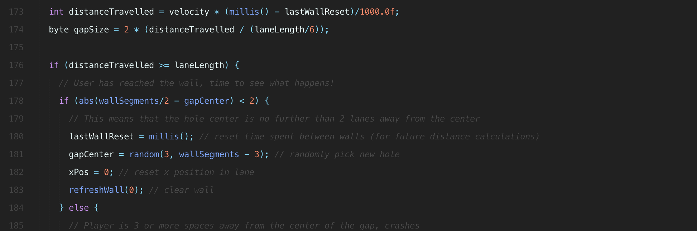

Software
Table of contents
Overview
Overview
This page is dedicated to explaining the software used for our game logic, where gyro sensor data is the input and LED control represents game state. The premise of our game is an endless run where the player must avoid crashing by tilting towards gaps in upcoming walls of light. For those interested, the physical system is described here, but all we need to know for the software component of the experience is our input and expected output.
Our game is directed by a MPU-6050 attached to a sideways rocking chair sending along yaw, pitch and roll information. Once this data is processed and the player's lean direction resolved, the game logic updates their digital position with respect to the gap they're aiming for. This is reflected to the player by lighting vertical LED strips in front of them, turning off a group that represents the gap they need to pass through.
Download the code
Whether you're looking to follow along on your own computer or you learn better by diving right in, here's a link to the source-code. It's open so feel free to request edits, make suggestions, etc!
Gyro Sensor Data
We used the library I2Cdevlib to handle input from the MPU-6050 sensor. Although it's able to handle various kinds of I2C communication, we only need to handle one axis of rotation for the MPU-6050 so we copied over only the chunks of this example that applied to our project. If you're not working with an Arduino or a MPU-6050 I would still encourage you to explore the Github repository for examples that fit your needs as there are many different flavors available.
Library Import
In order to get started, you must download a local copy of the library and add it to your Arduino IDE. Github allows you to download .zip files so a straightforward way to do this is to download the whole repository and import it through your Arduino IDE toolbar:
Sketch > Include Library > Add .ZIP Library...MPU6050/ which is located in the Arduino/ folder. Once this is done you may need to restart the IDE, but you'll know it worked if you can navigate to:File > Examples > MPU6050 > ...Global Variables
First off we have a few chunks of variables declared at the top of the file, the following is specific to the I2Cdevlib code. There's not too much to say here besides the comments in the snippet, move on whenever you're ready.
#include "I2Cdev.h"
#include "MPU6050_6Axis_MotionApps20.h"
#if I2CDEV_IMPLEMENTATION == I2CDEV_ARDUINO_WIRE
#include "Wire.h"
#endif
// class default I2C address is 0x68
MPU6050 mpu;
#define OUTPUT_READABLE_YAWPITCHROLL
#define INTERRUPT_PIN 2 // use pin 2 on Arduino Uno & most boards
// MPU control/status vars
bool dmpReady = false; // set true if DMP init was successful
uint8_t mpuIntStatus; // holds actual interrupt status byte from MPU
uint8_t devStatus; // return status after each device operation (0 = success, !0 = error)
uint16_t packetSize; // expected DMP packet size (default is 42 bytes)
uint16_t fifoCount; // count of all bytes currently in FIFO
uint8_t fifoBuffer[64]; // FIFO storage buffer
// orientation/motion vars
Quaternion q; // [w, x, y, z] quaternion container
VectorFloat gravity; // [x, y, z] gravity vector
float ypr[3]; // [yaw, pitch, roll] yaw/pitch/roll container and gravity vector
volatile bool mpuInterrupt = false; // indicates whether MPU interrupt pin has gone high
void dmpDataReady() {
mpuInterrupt = true;
}I2Cdevlib Setup
Next, we have the code in our setup() function within the Arduino sketch. Again, this code is directly from the example file on Github and unless you need to customize it, it's fairly reasonable to stick with the initialization procedure put forth by the original developer. We only removed some debug statements and logic that waits for user input to start taking data.
setup() {
...
// Gyro setup
// join I2C bus (I2Cdev library doesn't do this automatically)
#if I2CDEV_IMPLEMENTATION == I2CDEV_ARDUINO_WIRE
Wire.begin();
Wire.setClock(400000); // 400kHz I2C clock. Comment this line if having compilation difficulties
#elif I2CDEV_IMPLEMENTATION == I2CDEV_BUILTIN_FASTWIRE
Fastwire::setup(400, true);
#endif
while (!Serial); // wait for Leonardo enumeration, others continue immediately
mpu.initialize();
pinMode(INTERRUPT_PIN, INPUT);
Serial.println(mpu.testConnection() ? F("MPU6050 connection successful") : F("MPU6050 connection failed"));
// load and configure the DMP
devStatus = mpu.dmpInitialize();
// supply your own gyro offsets here, scaled for min sensitivity
mpu.setXGyroOffset(220);
mpu.setYGyroOffset(76);
mpu.setZGyroOffset(-85);
mpu.setZAccelOffset(1788); // 1688 factory default for my test chip
// make sure it worked (returns 0 if so)
if (devStatus == 0) {
// turn on the DMP, now that it's ready
mpu.setDMPEnabled(true);
// enable Arduino interrupt detection
attachInterrupt(digitalPinToInterrupt(INTERRUPT_PIN), dmpDataReady, RISING);
mpuIntStatus = mpu.getIntStatus();
dmpReady = true;
// get expected DMP packet size for later comparison
packetSize = mpu.dmpGetFIFOPacketSize();
} else {
// ERROR! (if it's going to break, usually the code will be 1)
// 1 = initial memory load failed, 2 = DMP configuration updates failed
Serial.println(devStatus);
}
...
}Reading Data
Finally we have the actual reading of the data! It begins with a fair amount of status checking to make sure that data is ready to be sent. What happens here is that a First In, First Out buffer stores data so that it's read in the order it was written.

Since it's possible for the buffer to overflow if code doesn't run consistently each loop, it's important to check and make sure everything's alright before trying to get data. The actual value reading happens at the bottom of this snippet once the buffer has been validated. All of this update is run each time the Arduino's main loop is run.
void updateGyro() {
// If programming failed, don't try to do anything
if (!dmpReady) return;
// Wait for MPU interrupt or extra packet(s) available
while (!mpuInterrupt && fifoCount < packetSize) {}
// Reset interrupt flag and get INT_STATUS byte
mpuInterrupt = false;
mpuIntStatus = mpu.getIntStatus();
// Get current FIFO count
fifoCount = mpu.getFIFOCount();
// Check for overflow (this should never happen unless our code is too inefficient)
if ((mpuIntStatus & 0x10) || fifoCount == 1024) {
// Reset so we can continue cleanly
mpu.resetFIFO();
Serial.println(F("FIFO overflow!"));
// Otherwise, check for DMP data ready interrupt (this should happen frequently)
} else if (mpuIntStatus & 0x02) {
// Wait for correct available data length, should be a VERY short wait
while (fifoCount < packetSize) fifoCount = mpu.getFIFOCount();
// Read a packet from FIFO
mpu.getFIFOBytes(fifoBuffer, packetSize);
// Track FIFO count here in case there is > 1 packet available
// (this lets us immediately read more without waiting for an interrupt)
fifoCount -= packetSize;
// Get Yaw, Pitch, Roll information
#ifdef OUTPUT_READABLE_YAWPITCHROLL
// Display Euler angles in degrees
mpu.dmpGetQuaternion(&q, fifoBuffer);
mpu.dmpGetGravity(&gravity, &q);
mpu.dmpGetYawPitchRoll(ypr, &q, &gravity);
pitch = ypr[1] * 180/M_PI; // Extract pitch specifically
#endif
}
}Now that we have the player's tilt information we can update the game state and afterwards show the player using our LEDs!
Game Logic
This section will cover how the game is structured and trace through the various steps involved in each cycle of updates.
Global Variables
The globals used in our game are all numbers used in 3 main contexts: timing, the course (walls and the space between them) and player position within the course. See the comments for explanations of each variable, and note that we can use byte instead of int wherever we know the number won't exceed 255. We use unsigned long for the counters because they will be updated using millis(), which uses this datatype for storing milliseconds.
// Timing
byte updateThreshold = 100; // Time between all game logic updates
unsigned long lastUpdate, // Counter for all game logic updates
lastWallReset; // Counter used to tell how long player has been between a pair of walls
// Course setup
byte wallSegments = 16, // Number of "lanes", also the horizontal resolution of LED strips
wall[16]; // A byte array that carries the state of each segment
int wallWidth = 1000; // Wall width in digital coordinates, important for tilt movement
int laneLength = 200, // Length player travels between walls
laneWidth = wallWidth/wallSegments; // Used in lane switching calculations
// Position
byte velocity = 20, // Player velocity
gapSize = 0, // Size of gap in wall
gapCenter = wallSegments/2; // Where the center of gap is in wall, starts in middle
int xPos = 0, // Player position within a single lane
stepSize = 40, // How far they move when tilting
pitch; // Tilt information provided by gyro sensor readingsGame Setup
The setup required for the game is quite small besides running a single update to initialize (which will be covered in the following section). Aside from that, a channel is chosen for Serial communication and the counters used throughout are initialized.
void setup() {
Serial.begin(115200); // Start Serial communication
...
update(); // Run a cycle of the main game logic
lastUpdate = millis(); // Set reference time for game logic updates, gets reset every loop
lastWallReset = millis(); // Similar but for when players pass walls
}Updating State
The main loop of the Arduino is kept lean to keep things clear! Each time the loop runs, we grab new sensor data from the gyro sensor attached to our chair. Besides that, everything runs in a block of logic that is only run on millisecond intervals determined by updateThreshold. Inside that loop we reset the update counter, run the game logic with updated tilt data and set LED strips to Blue or off depending on the values in wall.
The ShiftPWM code will be explained more at the end but for now it's sufficient to know that the first input is which LED to change the value of and the next three are Red, Green and Blue. Therefore when wall[i] is 1, blue is set to max.
void loop() {
updateGyro(); // Get new pitch information
// Avoid running game logic too often
if (millis() - lastUpdate > updateThreshold) {
lastUpdate = millis(); // Clear counter
// Run game logic to determine which lights should be on or off
update();
// Actually change state of LEDs using ShiftPWM.
for (int i=0; i < wallSegments; i++) {
ShiftPWM.SetRGB(i, 0, 0, wall[i] * 255);
}
}
}We've already covered updateGyro previously so let's dive into the update function!
void update() {
// Main loop logic: checks the time since last wall was passed to see how close player is to next wall.
// This information then dictates the rest of the logic.
int distanceTravelled = (float)velocity * (float)(millis() - lastWallReset)/1000.0f;
gapSize = 2 * (distanceTravelled / (laneLength/6));
if (distanceTravelled >= laneLength) { // Player has reached wall
if (abs(wallSegments/2 - gapCenter) < 2) {
// Made it through the gap!
resetStage();
} else {
// Crashed!
runEndgame(); // Some blinking red lights
resetStage();
}
} else if (gapSize == 0) {
// After player passes wall, all lights are off
refreshWall(0);
} else {
// Most common logic, traveling between walls.
updatePos(); // Updates lateral position to see if player has moved towards gap
refreshWall(1);
addGap();
}
}We kick things off by multiplying player velocity by the time spent moving towards the upcoming wall to get distance traveled. After this, a fairly arbitrary gap size is determined, feel free to play with this in your code if you like. The important piece about distance traveled is that it determines what "stage" of the lane we're in, which is reflected by the size of the gap. The diagram in the overview shows this in greater detail.
As the loop runs, we have two edge cases to account for besides just updating state and continuing to cycle. The first is a check to see if the player has reached the next wall. If so, we need to determine if they were close enough to the center to make it through or if they crashed. We've accomplished this by checking that the difference between the center of the gap and the center of the wall is less than 2 spaces. If yes, the resetStage logic is run, otherwise runEndgame, a brief blinking animation, runs - this represents the user crashing.
When the gapSize is 0, it means that the player is still in the furthest 6th of the lane from the incoming wall and the lights are all turned off, refreshWall(0), until the player is close enough to see a gap. Finally, we have the standard logic which updates the players X position, updatePos, based on tilt sensor values and subsequently sets all lights to 1, refreshWall(1), and places our most recently sized gap in the wall of light addHole().
The helper functions seen above are broken down below!
Reset Stage
This function first resets the timer that determines how far the player has traveled between walls. After the gap is moved to a random location and the player's X position with respect to their lane is reset.
void resetStage() {
// Happens when player has just passed a wall
lastWallReset = millis(); // Clear timer
gapCenter = random(3, wallSegments - 3); // Randomly set new gap
xPos = 0; // Reset X position
}Run End Game
Using ShiftPWM will be explained more in the bottom section but remember that the first value specifies the LED you'd like to change and the other 3 are Red, Green and Blue. Therefore the first loop is turning all strips to maximum red and the second is turning them all off. This loop happens 3 times.
void runEndgame() {
// Plays three rounds of blinking red light
for (int j=0; j&3; j++) {
for (int i=0; i&wallSegments; i++) {
ShiftPWM.SetRGB(i, 255, 0, 0);
}
delay(500);
for (int i=0; i&wallSegments; i++) {
ShiftPWM.SetRGB(i, 0, 0, 0);
}
delay(500);
}
}Refresh wall
This one is pretty small, it just goes through and sets all of the wall values (each corresponding to an LED strip) to whatever integer you supply to the function. We'll only need 1 (on) and 2 (off) for our purposes.
void refreshWall(int wallValue) {
// Set all wall values to either 1 (on) or 0 (off). These values are later used by
// ShiftPWM to control our LED strips.
for (int j=0; j&wallSegments; j++) {
wall[j] = wallValue;
}
}Update Position
Referring to the figure in the overview if needed, let's talk about the lane setup. Whenever a player starts in a lane, they start in the middle with an X position of 0. At the top of the file we initialized the lane width, so as the changing pitch (our tilt axis) dictates changes in the X position, we also check to see if absolute value of X is greater than half of the lane width. This would signify that X had moved at least half of width of the lane and since we start in the center that means it's time for a lane switch! However, in order to switch to the correct lane we need to know which side of the lane the player crossed. This is where flip comes in. This allows us to know if the direction was towards the left or right based off of sign.
Here's where things get a little tricky. There's no variable that actually keeps track of what lane the player is in. Instead, it's assumed that the player is always in the center lane coming right down the middle. This is because our chair doesn't actually move, it just tilts left and right. So instead of scooting the player around, the center of the gap on the wall shifts around as the size of the gap grows due to wall proximity. flip is used to do the actual shifting by adding itself to gapCenter, moving it either left (-1) or right (1).
Finally, the X position is flipped since the player would be entering the new lane from the opposite side they left the old one (moving left > exiting left > entering right of new lane). Then a small nudge is added on top of that so that the commute is clean and players don't end up sitting right on the boundary - potentially causing colors to flicker rapidly.
void updatePos() {
// Uses pitch information gathered by the gyro sensor to update player X coordinate.
// If the X position goes beyond the width of the lane, player moves into adjacent lane.
// Some manually calibrated ranges of gyro sensor
if (pitch > 5 && pitch < 150) {
xPos += stepSize; // Leaning right
} else if (pitch > 150 && pitch < 250) {
xPos -= stepSize; // Leaning left
}
if (abs(xPos) > laneWidth/2) {
int flip = xPos/abs(xPos); // Gets 1 or -1 depending on direction
gapCenter += flip; // Moves into new lane by setting relative position of gap
xPos = -xPos + (flip * (step * 2)); // Start away from edge in "new lane"
}
}Add Gap
Last but not least we have addGap. All we want to do is set certain values in the wall to 0. Since we know that gapSize is even, we can work from the center to the outside of the gap by only iterating through half of its range and moving in both the positive and negative directions.
void addGap() {
// Using an updated gapSize that corresponds to player distance from the next wall,
// this function turns off segments where the next gap should be.
for (int gap=0; gap&gapSize/2; gap++) {
wall[gapCenter - gap] = 0;
wall[gapCenter + gap] = 0;
}
}LED Control
We controlled our LEDs using the ShiftPWM library in conjunction with a series of 74HC595 bit shift registers. In order to import the ShiftPWM library, follow the same instructions listed at the top. Once this is done, let's hop back into the Arduino sketch and add our variables in.
Global Variables
Very similar to I2Cdevlib, we have a series of variables copied from ShiftPWM example code. The four bottom variables are the ones you're most likely to want to tweak (besides the last one, which is the limited by the number of pins on the bit shift register circuits). Also if your LEDs connect to ground instead of power you'll want to switch the ShiftPWM_invertOutputs variable to false.
const int ShiftPWM_latchPin=8;
// If your LED's turn on if the pin is low, set this to true, otherwise set it to false.
const bool ShiftPWM_invertOutputs = true;
const bool ShiftPWM_balanceLoad = false;
#include // include ShiftPWM.h after setting the pins!
unsigned char maxBrightness = 200;
unsigned char pwmFrequency = 75;
byte numRegisters = 6;
byte numRGBleds = numRegisters*8/3; Setup
ShiftPWM has a pleasantly small amount of code to add to setup to get working, only the number of bit shift registers you're using, how you want to group LEDs and then initialization.
ShiftPWM.SetAmountOfRegisters(numRegisters); // number of bit shift register circuits being used
ShiftPWM.SetPinGrouping(1); // color channel groupings when connecting pins, e.g. 1 = RGB RGB, 2 = RR GG BB, etc.
ShiftPWM.Start(pwmFrequency, maxBrightness); // InitializeChanging colors
The actual code required to change LED colors is also very minimal (ShiftPWM is generally a great library!). I'll reuse some code shown before for the example. ShiftPWM has many different methods that can be seen in their Github repo, but the only one we needed was ShiftPWM.SetRGB(). This method takes in four variables. First, the LED number which starts from the first set of 3 available write pins on the first bit shift register and goes from there. The second, third and fourth are Red, Blue and Green respectively. In the code below, we're setting Blue to either 0 or 255 according to whichever value is written in wall. That's about all there is too it! See here for more examples.
for (int i=0; i&wallSegments; i++) {
ShiftPWM.SetRGB(i, 0, 0, wall[i] * 255);
}That's all folks!
Thank you for reading, we'll be adding a contact form to our site soon in case you have any questions. Otherwise, feel free to look around.